비서-3급 (2019-05-13 기출문제)
1과목: 비서실무
1. 다음 중 비서의 업무 자세로 적절하지 않은 것은?
- 업무 지시를 받을 때에는 일관성이 결여되었거나 예외적인 사항이 있는지에 주의를 기울인다.
- 업무 처리 시 상사의 요구를 예견하여 미리 준비하기 위해 노력한다.
- 업무를 계획한 후에는 계획이 반드시 원안대로 실현되도록 한다.
- 상대방의 말을 경청하며 상사의 업무와 관련된 정보를 잘 알고 있도록 한다.
(정답률: 64%)

2. 비서의 업무수행 자세에 대한 설명으로 적절하지 않은 것은?
- 업무 수행 시 업무의 효율성과 효과성을 고려하여야 한다.
- 업무 수행 시 일이 한꺼번에 집중되는 경우는 우선순위를 정하여 업무를 수행하는 것이 불가능하므로 융통성을 가지고 대처해야 한다.
- 비서의 일상적인 업무를 신속하고 정확하게 처리하여 새롭게 발생할 업무를 준비하는 자세를 지녀야 한다.
- 업무 상 만나는 다양한 계층의 사람들을 항상 밝고 친절하게 응대해야 한다.
(정답률: 77%)
3. 비서직의 자기개발 및 네트워킹에 대한 설명으로 적절하지 않은 것은?
- 비서는 효과적인 업무처리 뿐만 아니라 자기개발을 위해서 도 지속적으로 다양한 사람들과 좋은 인간관계를 형성하는 것이 바람직하다.
- 비서는 업무상 필요한 최소한의 사람들과 폐쇄적이고 우호적인 관계를 형성하여 그들과 신뢰가 두터운 인간관계를 유지하는 것이 중요하다.
- 비서는 업무 상의 조언 뿐 아니라 인생의 조언을 얻을 수 있는 스승이나 선배를 많이 알아두는 것이 좋다.
- 자원봉사단체나 취미모임에의 참여는 생활을 풍요롭게 함과 동시에 네트워킹을 넓혀갈 수 있는 좋은 기회가 되기도 한다.
(정답률: 78%)
4. 상사와 급하게 통화해야 한다며 전화 연결을 요청하는 전화를 받은 경우 비서의 응대 자세로 부적절한 것은?
- 급한 용건이라고 하므로 상사에게 신속히 전화 연결한다.
- 용건이 무엇인지 확인한 후 상사와의 전화연결 여부를 결정한다.
- 전화를 건 상대방의 소속과 이름을 먼저 확인한다.
- 상사가 부재중이므로 먼저 비서에게 용건을 알려주면 상사가 전화를 드리도록 하겠다고 한다.
(정답률: 69%)
5. 전화를 걸기 전 비서의 업무 자세로 적절하지 않은 것은?
- 통화해야 할 용건을 미리 정리한다.
- 메모지와 펜, 통화에 필요한 자료 등을 미리 준비한 후 전화를 건다.
- 통화해야 할 용건을 원인과 경과, 결론 순으로 정리해 둔다.
- 상대방의 소속과 이름, 전화번호를 확인한다.
(정답률: 70%)
6. 선약되지 않은 내방객을 응대하는 비서의 자세로 적절하지 않은 것은?
- 비서는 상사의 소재와 접견실 상황을 파악하고 있어야 한다.
- 내방객이 소속과 용건을 밝히지 않고 상사를 꼭 만나야 한다고 할 경우 우선 내방객을 접견실로 안내한 후 상사에게 보고한다.
- 내방객의 성명과 소속, 용건을 확인하여 상사에게 보고 후 지시를 따른다.
- 내방객에게 상사를 만날 수 있다는 확신을 주지 않는다.
(정답률: 56%)
7. 비서가 외근하여야 할 때 부재중 사유를 알려야 하는 대상은 누구인가?
- 상사
- 상사 및 소속부서장(예: 총무부장)
- 상사, 소속부서장(예: 총무부장), 착신전환하여 전화를 대신받아 줄 옆자리 직원
- 가능하면 소속부서의 모든 직원에게 알려 결재시간을 조정하도록 한다.
(정답률: 66%)
8. 교통체증으로 출근시간보다 30여분 정도 늦게 사무실에 도착했다. 이런 경우 비서의 태도로 가장 적절한 것은?
- 일단 사무실에 도착하여 상사에게 죄송하다고 말씀드린 후 빨리 업무에 임한다.
- 교통체증으로 늦을 것 같은 상황이므로 즉시 상사에게 먼저 상황을 보고한다.
- 비서실에 근무하는 다른 비서에게 상황을 설명한 후 자신이 출근해서 해야 하는 업무를 수행해 줄 것을 부탁한다.
- 상사가 오전에 조찬모임에 다녀오므로 자신의 지각 사실을 굳이 알리지 않아도 된다.
(정답률: 66%)
9. 다음 중 상사의 출장 업무에 대한 비서의 지원업무로 적절하지 않은 것은?
- 출장에서 상사가 돌아오면 날짜별, 항목별로 출장경비 정산서를 작성한다.
- 출장보고서는 회사 규정에서 정한 마감기한 전에 작성될 수 있도록 한다.
- 상사가 출장지로 출발 전에 업무대행자를 알리는 문서를 작성하여 상사의 승인을 받도록 한다.
- 출장지에 도착했다는 연락을 받으면, 관련 부서에 상사 출장임을 알리는 메일을 보낸다.
(정답률: 65%)
10. 상사와의 인간관계에 대한 설명으로 적절하지 않은 것은?
- 상사와 비서의 관계는 존경과 신뢰의 관계라고 말할 수 있는데, 신뢰관계는 하루아침에 형성되는 것이 아니라 평소의 행동이나 업무처리를 통하여 쌓아 나간다.
- 상사의 신뢰를 얻기 위해서는 상사의 업무나 성격을 잘 이해하고 항상 상사의 입장에서 생각하고 행동하는 것이 필요하다.
- 상사의 단점을 사내 동료들이나 다른 사람들에게 말할 필요도 없지만 다른 사람들이 상사의 단점을 말할 때도 비서가 굳이 적극적으로 대응할 필요는 없다.
- 비서는 상사가 대내외적으로 빛나 보일 수 있도록 묵묵히 뒤에서 상사를 보좌할 때 상사와 좋은 신뢰관계가 형성된다.
(정답률: 68%)
11. 상사가 주관하는 일정을 확정하는 절차를 순서대로 나열한 것은?
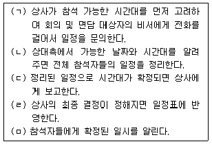
- (ㄱ) - (ㄴ) - (ㄷ) - (ㄹ) - (ㅁ)
- (ㄴ) - (ㄱ) - (ㅁ) - (ㄷ) - (ㄹ)
- (ㄱ) - (ㄴ) - (ㅁ) - (ㄷ) - (ㄹ)
- (ㄴ) - (ㄱ) - (ㄷ) - (ㄹ) - (ㅁ)
(정답률: 66%)
12. 다음 중 윤비서가 업무일지 작성시 유의사항으로 옳은 것은?
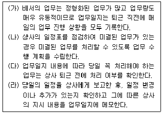
- (가), (나), (다)
- (가), (나), (라)
- (나), (다), (라)
- (가), (나), (다), (라)
(정답률: 39%)
13. 비서의 예약업무에 대한 설명으로 적절하지 않은 것은?
- 비서가 수행하는 대표적인 예약의 종류는 음식점, 교통편, 숙박, 골프, 공연, 회의장 예약 등이 있으며, 예약 시에는 일정을 반드시 재확인 후 예약받는 사람의 이름, 전화번호, 예약 번호 등을 받는다.
- 골프장은 운동만 하는 곳이 아니라 비즈니스가 이루어지는 곳이므로 위치, 날짜, 시간대, 상사 선호도, 회원권 소지 여부 등을 고려하여 예약한다.
- 자주 이용하지 않는 호텔에서 견적을 주겠다고 먼저 연락오는 경우에는 주거래 호텔이 있으므로 정보를 받을 필요가 없다고 거절하는 것이 좋다.
- 기본 정보와 예약의 빈도수, 상사의 피드백 내용 등을 데이터베이스로 구축하여 다음 예약 때 활용함으로써 업무를 보다 신속하고 정확하게 처리할 수 있다.
(정답률: 74%)
14. 상사 출장 중에 상사 지인의 부고를 듣게 되었다. 비서의 업무처리 방식으로 적절하지 않은 것은?
- 상사에게 연락하여 상사의 지시를 받는다.
- 상사를 대신하여 비서가 조문을 갈 경우 조객록에 상사의 소속과 이름을 적는다.
- 호상에게 상사를 대신하여 조문을 왔음을 알린다.
- 상주에게 사인을 확인하여 상사에게 보고한다.
(정답률: 66%)
15. 다음 중 회의 형식에 대한 설명으로 바르지 않은 것은?
- 브레인스토밍: 새로운 문제를 해결해야 할 때나 아이디어를 얻고자 할 때 적합한 회의
- 패널: 토의 주제를 놓고 전문가들이 준비된 단상 위에서 사회자의 진행으로 자유 토의를 한 후 청중으로부터 질문을 받아 답을 제시하는 형식의 회의
- 의회형 회의: 의사록에 상정된 안건에 대하여 사전 조사 및 자료 배부를 통하여 충분히 연구한 후 찬/반을 결정하기 위한 회의 형식
- 컨벤션: 다수의 인원을 소그룹으로 나누어 정해진 시간에 자유롭게 토의하여 나온 의견을 그룹대표자가 전체 앞에서 발표하여 전체의 의견을 통합해 나가는 회의
(정답률: 58%)
16. 다음 중 결혼식 축하문구로 쓸 수 없는 한자는?
- 祝結婚
- 祝盛典
- 祝壽宴
- 祝華婚
(정답률: 37%)
17. 비서의 보고방법으로 가장 적절하지 않은 것은?
- 육하원칙에 따라 간단명료하게 보고한다.
- 지시 받은 일을 끝내면 즉시 보고한다.
- 상사가 요청한 것만 보고한다.
- 시일이 걸리는 일은 진행사항을 중간보고 한다.
(정답률: 74%)
18. 앞선 일정의 지연으로 상사의 거래처 회의 장소 이동이 20분 정도 늦어졌다. 이 때 비서의 업무처리 방법으로 가장 적절한 것은?
- 운전기사가 최대한 속력을 내서 회의 시간에 많이 늦지 않게 도착하겠다고 했으므로 거래처에 굳이 알릴 필요는 없다.
- 거래처 비서에게 전화하여 회의를 30분 늦추자고 한다.
- 거래처 비서에게 20분 정도 늦게 됨을 알리고 운전기사에게 회의장소에 대한 자세한 내용, 즉 건물이름, 엘리베이터 위치 등을 다시 알린다.
- 상사에게 문자하여 거래처 비서와 통화했으니 안심하라고 전달한다.
(정답률: 76%)
19. 비서업무에서 발생하는 지시와 보고에 대한 설명으로 적절하지 않은 것은?
- 상사에게 지시를 받고 업무를 수행한 뒤 보고를 할 때는 상황의 긴급도, 중요도, 공식성 등에 따라 보고 형식이 달라질 수 있다.
- 구두 지시는 기밀 사항, 긴급 사항, 간단한 내용 등의 업무지시에 주로 사용된다.
- 문서 지시는 메모, 이메일이나 문서 등을 통해 지시하는 경우로 지시 내용을 남겨두어야 하는 경우와 공식적인 내용일 경우에 사용된다.
- 지시를 받는 중이라도 이해하기 어려운 점이 있으면 충분히 이해할 때까지 중간에 질문하며 상사의 지시가 끝나면 비서는 자신의 말로 복창해서 잘못 들었거나 빠뜨린 사항은 없는지 확인해야 한다.
(정답률: 56%)
20. 다음 중 비서의 상사 지원업무에 대한 설명으로 적절하지 않은 것은?
- 상사에게 온 초청장과 행사 안내장의 날짜에 형광펜으로 표시하여 올려 드린다.
- 상사에게 온 우편물은 상사 출근 전에 정리하여 중요도와 긴급도에 따라 분류한 후 상사 책상 위에 놓아둔다.
- 상사 책상이나 테이블 위의 서류를 정리하면서 메모지나 필기한 것이 있으면 보안을 위해 폐기한다.
- 당일의 업무 수행 점검표는 버리지 말고 보관하여 추후 업무에 활용한다.
(정답률: 70%)
2과목: 사무영어
21. 다음 보기의 단어와 의미가 잘못 연결된 것은?
- in-tray : 발송서류함
- drawing pins : 압정
- paper cutter : 종이 재단기
- book case : 책꽂이
(정답률: 57%)
22. 김영수 과장은 회사의 인력을 선발하고 채용하고 교육하는 업무를 담당하는 부서에서 근무 중이다. 김과장이 속한 부서의 명칭은 무엇인가?
- Production Department
- Marketing Department
- Research & Development Department
- Human Resources Department
(정답률: 61%)
23. 다음 빈칸에 들어갈 가장 적절한 동사의 형태는?
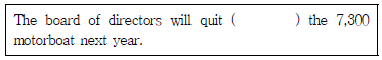
- to produce
- produce
- produced
- producing
(정답률: 48%)
24. 다음 영문 서신의 구성 요소 작성법에 대한 설명으로 바르지 않은 것은?
- Inside address: 발신인 이름, 직책, 부서명, 회사명, 주소순으로 기입한다.
- Salutation: Dear를 쓴 후, 존칭과 성을 쓰고 comma(,)나 colon(:)을 한다.
- Complimentary close: 첫 글자는 반드시 대문자로 입력하고 comma(,)로 끝낸다.
- Enclosure: 서한문과 함께 동봉물이 있을 경우 반드시 서한문에 명시를 한다.
(정답률: 31%)
25. 다음의 대화문 중 밑줄친 부분에 들어간 단어가 적합하지 않은 것은?
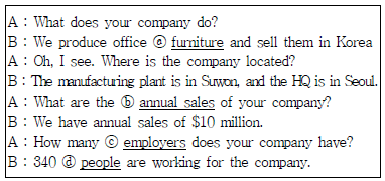
- ⓐ furniture
- ⓑ annual sales
- ⓒ employers
- ⓓ people
(정답률: 47%)
26. 다음 팩스에서 괄호에 가장 적절한 단어를 고르세요.
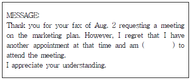
- available
- unavailable
- pleased
- willing
(정답률: 49%)
27. 다음 메모에 대한 설명 중 올바르지 않은 것은?
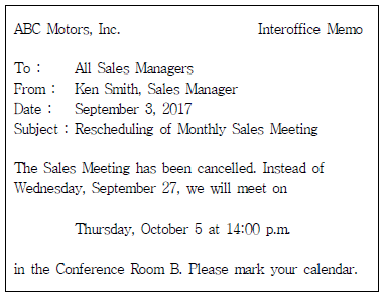
- 월간 영업 미팅 재조정에 대한 통보
- Ken Smith의 직장명 확인 불가
- 수신자는 모든 영업 담당 관리자
- 변경된 미팅 일자는 10월 5일(목) 오후 2시
(정답률: 62%)
28. 다음 중 영어 표현이 바르지 않은 것은?
- 시내전화 - local call
- 국제전화 - long distance call
- 지역번호 - area code
- 전화회의 - conference call
(정답률: 55%)
29. 다음 중 밑줄 친 부분에 들어갈 내용으로 올바르지 않은 것은?
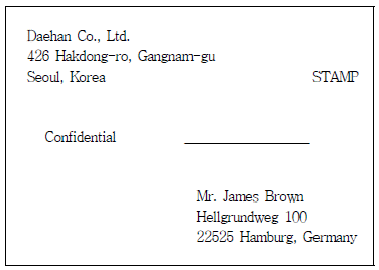
- Via Air Mail
- Urgent
- Express Delivery
- Registered Mail
(정답률: 44%)
30. 다음은 어떤 종류의 비즈니스 레터인가?
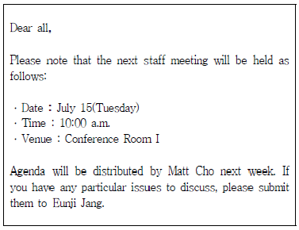
- Congratulation Letter
- Announcement Letter
- Reservation Letter
- Appointment Letter
(정답률: 46%)
31. 다음 전화통화 중 사용하는 표현에서 비슷한 의미를 가진 문장이 아닌 것은?
- Who is calling, please?
- May I call you, please?
- May I ask who's calling, please?
- May I have your name, please?
(정답률: 53%)
32. 다음 영어 표현이 한국어로 올바르게 번역되지 않은 것은?
- You deserve the promotion. -> 당신은 승진할 자격이 있습니다.
- Do you mind if I give a written answer? -> 제가 서면으로 답변을 드려도 괜찮을까요?
- I spent a lot of time doing market analysis. -> 저는 시장을 분석하는데 많은 시간을 사용했습니다.
- Can we pay in installments? -> 설치비를 지불해도 될까요?
(정답률: 32%)
33. 다음 대화의 빈칸에 들어갈 가장 적절한 표현은?
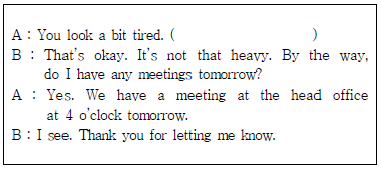
- Let me hold your bag.
- How was your business trip?
- Let me treat you this time.
- Let me give you my business card.
(정답률: 56%)
34. 아래 대화문의 빈칸에 들어갈 표현으로 가장 적절하지 않은 것은?
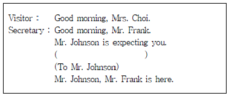
- This way, please.
- Could you come this way, please?
- Please go right in.
- Follow me.
(정답률: 46%)
35. 다음 내방객 응대의 대화에서 한글 뜻에 가장 적절한 영어 표현을 고르세요.
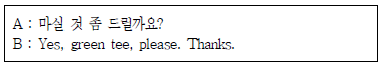
- Will you care for drink of something?
- Would you care for something to drink?
- Shall you care to something to drink?
- Would I care for something to you to drink?
(정답률: 51%)
36. 다음의 자동응답기 이용 시 ⓐ, ⓑ에 들어갈 가장 적절한 표현은?
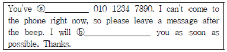
- ⓐ reached, ⓑ get back to
- ⓐ made, ⓑ speak
- ⓐ called, ⓑ say
- ⓐ phoned, ⓑ return
(정답률: 35%)
37. 다음 보기 중 빈칸에 들어갈 내용으로 가장 적절한 것은?
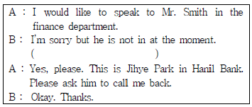
- Would you like to hold the line?
- I’ll connect you with him right away.
- I’m afraid he is off today.
- Would you like to leave a message?
(정답률: 62%)
38. 다음 대화의 빈칸에 들어갈 내용으로 가장 적절한 것은?
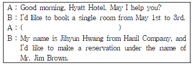
- How much is it?
- May I ask your name, please?
- How long will you be staying?
- Did you have a nice trip?
(정답률: 69%)
39. 다음 중 어색한 표현이 있는 부분은?
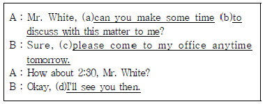
- (a)
- (b)
- (c)
- (d)
(정답률: 41%)
40. 다음 ⓐ, ⓑ 빈칸에 공통으로 들어갈 가장 적절한 표현은?
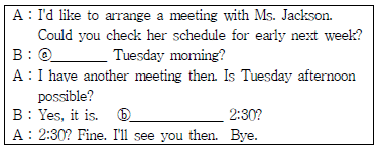
- How about
- I mean
- What would okay
- How do you think
(정답률: 61%)
3과목: 사무정보관리
41. 문서작성과 관련된 다음의 용어 설명 중 잘못된 것은?
- 검토자는 결재권자를 보좌하는 직속 하급자를 의미하며 기안한 내용을 점검하여 동의 여부를 결정한다.
- 기안문의 내용과 관련이 있는 다른 부서의 업무 협조를 받고자 할 경우 결재 전에 받아야 한다.
- 기안시 발의자와 보고자도 알 수 있도록 표기하며 발의자는◎표시를 하고 보고자는 ★표시를 한다.
- 시행 일자는 문서가 효력을 발행하는 날짜로서 내부 결재 공문서인 경우에는 최종 결재가 되는 날부터 효력을 발생하는 것이 일반적이다.
(정답률: 52%)
42. 비서가 사무문서 작성시 주의해야할 내용으로 가장 부적절하게 설명된 것은?
- 문서의 내용을 구체적으로 설명하며 그에 따른 주요 메시지를 도출해내는 미괄식 구성이 사무 문서에서 대체로 선호된다.
- 문서를 읽는 사람의 내용 주제 이해 정도 및 문서에 대한 욕구와 태도를 고려하여 작성해야 한다.
- 문서를 통해 전달하고자 하는 결론적인 메시지가 눈에 띄도록 간결하게 작성한다.
- 비서가 상사를 대신하여 작성하는 문서는 상사의 최종 검토와 확인을 받아서 상사의 이름으로 나가는 것이 원칙이다.
(정답률: 46%)
43. 문서의 종류에 관한 설명으로 잘못된 것은?
- 도면, 사진, 디스크, 필름 등의 특수 매체 기록도 문서에 포함된다.
- 공문서의 종류에는 법규 문서, 비치 문서, 공고 문서 등으로 세분류할 수 있다.
- 개인이 작성한 사문서를 행정 기관에 제출하여 접수된 것은 사문서이다.
- 사문서의 종류로는 안내장, 인사장, 소개장, 추천장 등이 포함된다.
(정답률: 54%)
44. 다음 보기 중 사무용지 크기가 가장 큰 것은?
- A3
- A4
- B3
- B4
(정답률: 55%)
45. 다음 중 문서의 의사전달 기능과 가장 거리가 먼 것은?
- 작업을 명령하고 전달
- 지시받은 업무처리 후 보고
- 연락, 통지, 양해를 구함
- 분석을 위한 수치, 기술을 정리
(정답률: 54%)
46. 다음 중 공문서의 기안문 작성시 발신 기관명 작성에 대한 설명이 가장 적절하지 않은 것은?
- 발신 기관명은 문서의 기안 부서가 속한 기관명을 기재한다.
- 발신기관의 홍보 문구는 발신 기관명 바로 아래에 표시한다.
- 발신 기관의 로고나 상징, 마크, 바코드 등을 표시함으로 기관의 이미지를 높일 수 있다.
- 발신기관 로고의 위치는 왼쪽 상단에 표시하며, 상징의 위치는 오른쪽 상단에 표시한다.
(정답률: 37%)
47. 다음 중 의례문서의 종류와 설명이 가장 올바르게 연결되지 않은 것은?
- 안내장-용건이나 목적을 간단하게 기재하고 자세한 설명이 필요한 경우 별도의 첨부문서를 작성한다.
- 초대장-인사말이나 형식적인 부분은 생략하고 용건이나 목적을 명확하게 작성한다.
- 인사장-계절 인사와 전할 용건을 먼저 밝힌다.
- 감사장-너무 형식에 치우치지 않게 작성한다.
(정답률: 62%)
48. 사무문서 작성 시 주의해야할 점이 가장 적절하지 않은 것은?
- 문서를 작성할 때 초안을 작성함으로써 문서의 내용을 다양하게 표현하고 검토할 수 있다.
- 공문서를 작성할 때는 순화어를 사용한다.
- 영어 번역은 능동형보다는 피동형 표현으로 고치는 것이 좋다.
- 조사, 어미 등을 생략할 경우 ‘~하다’ 등을 과도하게 생략하지 않도록 한다.
(정답률: 58%)
49. 다음 보기 중 사용 용도가 다른 하나는?
- 블루레이
- DVD
- SD카드
- LAN카드
(정답률: 47%)
50. 다음 중 IP 주소 관리에 대한 설명으로 가장 적절하지 않은 것은?
- 한 컴퓨터의 IP 주소는 전 세계에서 단 하나만 존재하는 것이다.
- IP 주소는 60진수로 표기하고 읽는다.
- 0부터 255까지의 수로 표시한다.
- DNS란 인터넷 도메인 이름들의 위치를 알아내기 위해 IP주소로 바꾸어 주는 시스템이다.
(정답률: 49%)
51. 다음 중 한글 맞춤법 띄어쓰기에 대한 설명으로 옳지 않은 것은?
- 조사는 그 앞말에 붙여 쓴다. 예) 회사에서만이라도
- 의존 명사는 띄어 쓴다. 예) 나도 할 수 있다.
- 단위를 나타내는 명사는 붙여 쓴다. 예) 차 열대
- 두 말을 이어주거나 열거할 적에 쓰이는 다음의 말들은 띄어 쓴다. 예) 이사장 및 이사들
(정답률: 53%)
52. 컴퓨터나 원거리 통신 장비사이에서 메시지를 주고 받는 양식과 규칙의 체계를 의미하는 용어는?
- 프로그램
- 프로토콜
- 블루투스
- 프로포폴
(정답률: 58%)
53. 컴퓨터 바이러스 및 악성코드 감염에 관련한 사항으로 가장 부적절한 설명은?
- 컴퓨터에 악성코드 감염 시 상사의 신상 기록이 유출되어 금전적인 피해로 이어질 수 있으므로 비서는 보안관리에 주의를 기울여야 한다.
- 컴퓨터 바이러스 감염을 예방하기 위하여 모르는 사람에게 이메일을 전송받은 경우 열어보지 말고 바로 삭제한다.
- 자신의 컴퓨터 바탕화면이나 하드 디스크에 모르는 파일이나 확장자가 존재할 경우 즉시 바이러스 검사를 한다.
- 컴퓨터가 바이러스나 악성코드에 감염되었다고 하더라도 중요 문서를 백업해 둔다면 큰 문제가 되지 않는다.
(정답률: 59%)
54. 다음 중 문서의 보안 관리에 관한 설명이 가장 적절하지 못한 것은?
- 전자문서의 보안관리 방법으로는 문서의 활용 권한에 따라 암호를 설정하는 방법이 있다.
- 기업의 보안문서는 내외부의 유통이나 열람 등이 매우 엄격히 제한된다.
- 문서의 보안을 위해 열람, 편집, 출력, 전송에 대한 권한은 직급이나 직무에 따라 차별적으로 부여하지 않는 것이 좋다.
- 중요한 서류나 메모의 원본, 사본은 문서 세단기를 이용하여 파기한 후 버리고, 문서 세단기가 없을 경우에는 여러 번찢어서 버린다.
(정답률: 67%)
55. 다음 중 사무기기를 구매할 때 주로 고려해야할 사항으로 가장 거리가 먼 것은?
- 성능
- AS의 편리성
- 가격
- 유행
(정답률: 68%)
56. 다음 중 복사기 사용 방법 및 유의사항으로 가장 적절하지 않은 것은?
- 기밀문서를 복사 후에는 원본과 복사본 모두 빠뜨리지 않고 챙겼는지 확인한다.
- 복사기 덮개를 올리고 복사하려는 면을 위로 향하게 놓고 복사한다.
- 여러 장을 복사하기 전에 먼저 한 장을 복사하여 복사 상태를 확인한다.
- 복사 시 용지가 걸릴 때는 걸린 위치를 확인 후 무리가 없도록 걸린 종이를 뺀다.
(정답률: 69%)
57. 다음 설명에 해당하는 용어는?
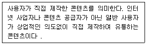
- PDA
- UCC
- 유튜브
- 팟캐스트
(정답률: 60%)
58. 다음 중 성격이 다른 한 가지는?
- 크롬
- 파이어폭스
- 사파리
- 드롭박스
(정답률: 59%)
59. 다음 중 필요한 정보와 정보를 찾을 수 있는 원천(source) 연결이 가장 적절하지 않은 것은?
- 항공편 정보- 빅카인즈(구. KINDS)
- 기업정보 –금융감독원 전자공시시스템
- 지리정보 –구글어스
- 날씨정보 - 케이웨더
(정답률: 50%)
60. 비서가 인터넷에서 정보를 검색하고 관리하는 방법에 대한 설명으로 가장 부적절한 것은?
- 수집될 정보의 성격 및 내용을 파악하여 적절한 인터넷 사이트를 결정한다.
- 검색하고자 하는 주제어를 AND와 OR과 같은 연산 기호를 적극 활용하여 검색한다.
- 자주 활용하는 정보 사이트는 ‘즐겨찾기’로 저장해 둔다.
- 상사에게 필요한 정보를 계획하고 수집한 후 상사가 요청하는 경우에 한해 수집된 정보를 요약‧분석하여 보고한다.
(정답률: 36%)